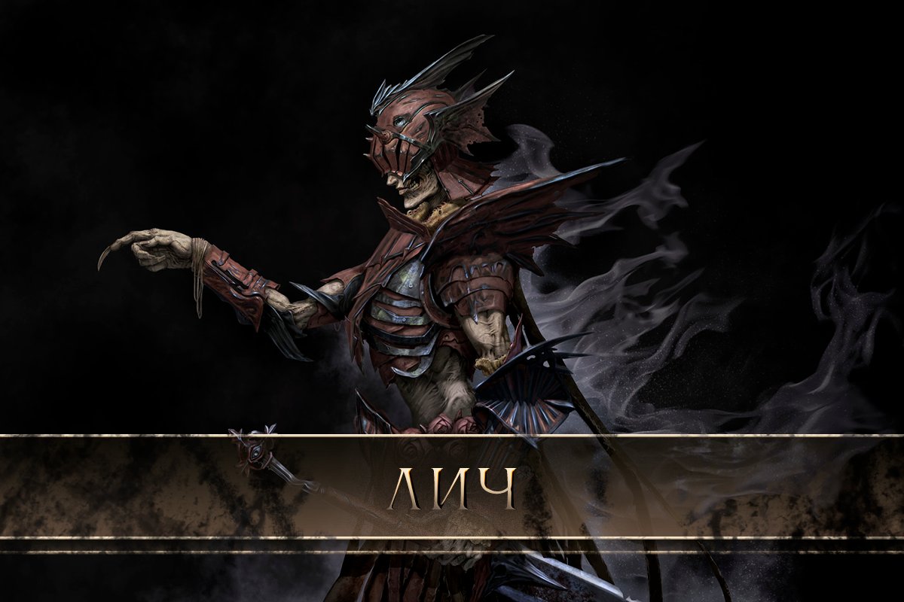

Некромантия
− это богомерзкая наука, черпающая силу из некроэнергии, − под запретом и нигде не приветствуется. Найти некроманта или напороться на такого случайно практически невозможно, а найти наставника − и того сложнее. Такова уж жизнь адептов смерти, что всегда и вовеки веков на них и их творениях висит гриф «УНИЧТОЖИТЬ».
Некроманты — это учёные, которые оживляют мёртвую плоть для служения или из банальной вредности, желая подпортить веселье близлежащему городу или деревне. В одиночку некроманты редко могут добиться успехов на этом поприще. Нужно не только хорошо разбираться в анатомии живых существ, но ещё и где-то добывать более-менее целые тела, к тому же без тёмного шамана оживления не будет. Именно он привязывает души к якорям, а потом вселяет их в мёртвые тела, обработанные некромантом.
После того, как тело воскрешено, оно обладает по-детски трогательной верностью некроманту. Последний пользуется этим, распоряжаясь воскрешённым как слугой. Их взаимодействие похоже на то, как налаживают контакт друиды и дикие звери.
Но не всё так просто! Быт некроманта — не только воскрешение мёртвых и посиделки за травяным чаем с тёмными шаманами. Кроме интересной стороны работы есть и рутинная: уход за нежитью. Будь она хоть скелетом, хоть едва начавшим гнить трупом, без должного ухода срок служения станет весьма коротким.
Духовно-якорный метод
Некроэнергия — это проводник связи между некромантом и его слугой. Нежить — это марионетка, а связь посредством некроэнергии — нить.
По сути, некроэнергия — это духовная мощь, изменившаяся под еретическим влиянием.
Количество затрачиваемой некроэнергии напрямую влияет на качество управления. Некромант-ученик может контролировать только одного слугу, на которого уходят вся его некроэнергия. С опытом затраты уменьшаются и некромант может потратить освободившиеся излишки на подчинение новой нежити. Чем больше энергии затрачивается, тем точнее контроль. Если нежить уничтожить, затраченная некроэнергия не вернётся к некроманту, ему придётся её восстанавливать, поэтому нельзя создать новую нежить сразу после уничтожения старой.
Свойства нежити
Нежить может обладать некоторой степенью самостоятельности. Это зависит от того, какая душа и в какое тело она была помещена. В первую очередь это заметно в том, как нежить выполняет приказы. Чем она умнее, тем больше приказов способна выполнить. Лучше всего, когда душа помещена в своё же мёртвое тело, и чем меньше времени прошло с момента смерти, тем лучше. Опыты показали, что воспоминания мертвеца принадлежат именно душе, а не телу. Соответственно, нежить с «родной» душой получает такое преимущество, как использование мышечной памяти.
«Свежие» мертвецы способны воспринимать следующие концепции:
- Пространства;
- Перемещения;
- Переноса прижизненного опыта на практику;
- Обучения;
- Выбора.
Тем не менее, даже самая умная нежить неспособна действовать самостоятельно без чётких приказов некроманта. Таким образом, нежить, какой бы сильной она ни была, даже защищаться не будет, если ей не приказать. Можно попробовать отдавать приказы, подразумевающие последовательное выполнение разных действий, однако их выполнение будет полностью зависеть от интеллекта нежити и имеющегося у неё опыта. Это значит, что нежить не будет выполнять приказ, если не может или не знает, как его выполнить. Тем не менее, как показывает практика, некоторая свобода воли у нежити всё же есть. То есть, если приказать нежити «убить», она сама выберет, каким образом это сделать, если способ не был указан.
Полное управление нежитью подразумевает точное знание строения управляемого тела. У хорошего некроманта слуги — продолжения его собственных рук. Если под контролем одинаковые типы нежити, управление ими проще, чем разными. Сложно также управлять кадаврами, которые собраны из слишком большого количества составных частей, ведь у них нет мышечной памяти. Поэтому если нужна зомби-лошадь, проще взять труп обычной лошади, чем составлять её из частей других существ.
Один из самых частых вопросов начинающих некромантов: «Как работает скелет, если у него нет органов чувств?»
Ответ кроется в основном принципе духовно-якорного механизма создания нежити. Скелет, как и любая другая нежить, содержит в себе якорь с душой, которая и является источником энергии для его передвижения и обработки информации. Также скелет может получать информацию непосредственно от некроманта. Таким образом, нежить, даже если у неё нет глаз, может видеть то же, что и сам некромант, что, к сожалению, в обратную сторону не работает.
Важно знать: нежить становится безынициативной, если некромант умер или его просто нет рядом. Нельзя отсылать от себя нежить на большие расстояния, максимум — на 50 метров. Более того, чем больше нежити в отряде, тем меньше расстояние, на котором её можно контролировать.
Навыки нежити
Нежить не может быть магом. Использование всех остальных навыков зависит от воспоминаний души и тела, а также физических возможностей — без рук от нежити-плотника никакой пользы не будет.
Если душа помещена в своё же мёртвое тело, нежить будет обладать 90% навыков, которыми обладала при жизни. Конечно, навыки сильно зависят от свежести тела. Гнилой зомби прыгать не сможет.
Если поместить в тело чужую душу, нежити понадобится время, чтобы адаптироваться. Кроме того, у неё будет полностью отсутствовать мышечная память и навыки придётся натренировывать заново.
Воспоминания нежити принадлежат помещённой душе, а не телу.
Виды нежити
Скелет
Прежде чем пихать в череп будущего слуги якорь с привязанной душой, следует убедиться, что его кости не рассыпятся от первого же движения. Чтобы избежать этого, некроманту нужно перевязывать эластичными лентами самые ненадёжные суставы и надеть на кости тканевые «рукава», чтобы избежать технических повреждений искусственных связок. Это всё весьма трудоёмко и затратно по времени, однако лёгкая доступность рабочего материала (хищение с кладбищ, например) того стоит.
Скелет не имеет дара речи (по анатомическим причинам), зрения, слуха и обоняния, большой физической силы или ловкости, зато идеально подходит для декора или простой работы по уборке помещений и запугиванию суеверных людей.
Тело
Свежеубитый субъект — самая желанная добыча для некромантов. Уход за ним минимален, дурного запаха ещё нет, голосовые связки целы, как и остальные органы. В такого даже якорь с привязанной душой вшивать приятно.
Из них выходят самые лучшие слуги, которых порой трудно даже от живых отличить. Если, конечно, не наблюдать долгое время, ведь тогда станет ясно, что мертвецу не нужна еда, вода, сон и отдых (а дышать приходится только для разговора). А ещё ему не больно, поэтому от перенапряжения он может не заметить, как порвёт себе мышцы или кожу. В бою это превращается в психологическое оружие: не каждый спокойно перенесёт вид идущего в атаку воина с топором во лбу и десятком стрел в спине.
Труп
Здесь всё зависит от того, насколько он разложился. Подгнившая кожа, помутившиеся глаза, залитые трупным ядом уши и лёгкие не способствуют коммуникации. Зато у такого слуги достаточно сил, чтобы поднять оружие или тяжёлую мебель. Труп, с которого уже сползают кожа и мясо, будет менее полезен в бою и быту.
Кадавр
В отличие от воскрешённых скелета, трупа и тела, кадавров необходимо создавать. Это долгое и утомительное занятие. Необходимо несколько тел, которые нужно разобрать, а потом собрать заново, придав им другую форму. Вес кадавра редко бывает ниже 250кг и выше 2,5т, так как более тяжёлые варианты просто не могут сдвинуться с места. Время на создание — от 6 часов до нескольких дней. Чем больше используется деталей, тем дольше он создаётся. Кадавр требует намного больше ресурсов: как алхимических составов от гниения, так и эластичных лент с тканями, чтобы не разваливался.
Где начать изучение?
Ламахский полуостров, территория племени ламах-виден. Баспана, Тейель, резервация ламах-виден. Просто так они учить, разумеется, не будут. Во всех остальных землях эту науку не жалуют.
Тела животных
Применение туш животных возможно, но смысла в этом мало: работу выполнять, имея только лапы или копыта, трудно. Чаще всего в такие тела некроманты вселяют душу тех же зверей и получают злое, тупое пушечное мясо, которое обычно охраняет их логова.
Максимум
- Новичок искусств нежизни позволить себе мёртвого слугу не может.
- Ученик — один воскрешённый, но создание кадавров ещё недоступно.
- Умелец — два воскрешённых или один кадавр.
- Мастер — четыре воскрешённых, среди которых может быть один кадавр.
Чтобы управлять большим количеством, нужен нечеловеческий опыт и сила, но решение есть!
Личефикация
Лич — это живой мертвец, когда-то бывший некромантом и тёмным шаманом, а теперь получивший возможность управлять ордами нежити. Он верен тёмным искусствам и лишён простых человеческих нужд. Он презирает и ненавидит живых, они кажутся ему мошками-одноднёвками.
Лич отличается сильной склонностью к преувеличению своих реакций. Если пафос, то даже бестийцы нервно курят в сторонке. Если ненависть, то испепеляющая. Если хандра, то с полным отторжением от реальности.
Внешность у лича специфическая. После личефикации его тело усыхает, кожа сереет, кости и сухожилия сильно выпирают. Лич предпочитает скрывать свои мощи одеждой и пафосными до безобразия украшениями. В ход идёт всё, начиная от обычных невзрачных балахонов и заканчивая тяжелыми доспехами странной формы и сомнительной практичности. Иногда носит маску, чтобы скрыть лицо, а иногда для большего устрашения оставляет обтянутый кожей череп на виду.
Со временем нужда как-то укреплять своё тело становится необходимостью, ведь чем больше у лича нежити, тем слабее его тело.
В ритуале личефикации используется ядро какого-нибудь стихийного элементаля, поэтому лич в итоге получает некоторую власть над одной из стихий.
- Ядро огненного элементаля даёт личу красно-оранжевые магические оттенки и «огненные» свойства: «горят» глаза, слегка дымится тело, щелчком пальцев поджигаются свечи и волосы жертв, а созданная нежить тоже несёт в себе элемент огня. Следы такого лича всегда тлеют и обугливают растения и землю, а снег растапливают.
- Воздух — лич парит над землей не выше нескольких метров, способен взмахом руки спровоцировать волну воздуха, сбивающую с ног или гасящую открытые источники огня. Также в ограниченном количестве может разбрасывать несмертельные молнии, его глаза светятся, благодаря наэлектризованности он может стать опасным противником в ближнем бою. Другое дело, что личи обычно в рукопашную не ходят. Его нежить необычайно прыгучая и лёгкая, что позволяет создавать летающих тварей.
- Земляной лич способен по щелчку пальцев наращивать на орды своей нежити плотный слой песка и камней, который сложно пробить холодным оружием и в котором застревают стрелы. Внешний вид такого лича обманчиво безобиден: из всех спецэффектов его выделяет только зеленоватое свечение глаз и буквально сыплющийся изо всех щелей песок.
- Вода – покрытый инеем и источающий могильный холод лич, от его прикосновения всё покрывается коркой льда. Синее или голубое сияние сочится из всего его тела, ярче всего — из глаз. Стандартные способности: создание ледяных стрел и ледяных стен. Последних хватает, чтобы закупорить небольшой проход. Нежить также приобретает стихийный элемент холода.
Ритуал
Главные требования к будущему личу – мастерство в некромантии и тёмном шаманизме, а также базовые знания алхимии. Это налагает ограничения на возраст будущего лича, а также на уровень его социализированности: юноша не может быть мастером в нужных дисциплинах, а некроманты — это изгои, которые мало понимают в социальных нормах и не крутятся в обществе. В гильдии «Инфердормис» могут помочь начать ритуал.
Необходимые ингредиенты для ритуала:
- Кровь, еретически оскверненная (добывается в местах жертвоприношений тёмным богам, где ритуал успешно завершился созданием связи). Желательна кровь той же расы, к которой относится и будущий лич.
- Ядро элементаля. Является основополагающим элементом, влияет на доступную после личефикации стихию.
- Расщеплённые души. Чем больше, тем лучше. Идеальным выбором станет Место Силы.
- Алхимический раствор «некробульон». Необходим для преобразования живого тела в мёртвое.
- Ассистент. Идеально подойдёт прислуга-нежить, способная выполнять задачи средней интеллектуальной сложности. Живой помощник крайне не рекомендуется из-за общей опасности личефикации для живых.
Осквернённая кровь смешивается с раздробленным ядром элементаля и огромным количеством некробульона, затем пропитывается расщеплёнными душами (чем их больше, тем быстрее лич потом «промаринуется»). Во всём этом важна точность, последовательность и профессионализм. После того, как всё готово, лич погружается в смертельную ванну, где проводит несколько недель, пока его тело не пропитается и не избавится от склонности к гниению. В процессе будущий лич умирает, поэтому, чтобы избежать агонии и лишнего бултыхания, настоятельно рекомендуется принять крепкое снотворное. После этого подключается ассистент (внимание, если ассистент — нежить, то стоит подыскать живого ему на замену!), который и проводит все манипуляции с погружением, терпеливым выжиданием и вытягиванием тела свежеиспечённого лича. После промакивания излишков смеси и сокрытия тела лича одеждой ассистенту остаётся только подождать, когда тот пробудится.
Способности
Некроэнергия — теперь основа силы лича, вместо духовной мощи или магической энергии. Некроэнергия — это то, что даёт личу возможность контролировать мертвых, пользоваться примитивной стихийной магией и существовать.
Руническая магия у лича атрофируется полностью, если он был ей обучен. Арсенал известных заклинаний теперь вне доступа, вместо него — не самый гибкий и разнообразный стихийный элемент.
Связь с нежитью, которую лич создал при жизни, сохраняется. Навык шаманизма теряется. Остальные навыки (воинские, ремесленные, научные) сохраняются, так как память лич не теряет.
Лич управляет нежитью на несколько порядков круче обычного некроманта, однако большой размах требует больших жертв и ритуал личефикации — лишь мизерная доля испытаний. Тело лича — это один сплошной якорь, который можно дробить. Оторвав от себя кусочек плоти или кости, лич помещает его как обычный якорь в мёртвое тело или может нащипать от себя ошмётков и оставить муторную работу на своих слуг.
От куска зависит размер, сила и расстояние контроля нежити. Крошка размером с ноготь поднимет только мелкую нежить, которая не сможет отойти от лича дальше, чем на пару десятков метров и будет тупа, как пробка. Крупная часть позволит отправить крупную нежить на многие сотни миль и не терять с ней связи. Если же нежити пожертвовать кусок своего мозга или сердце, то связь сохранится даже на другом краю мира. Архиличу можно всё, кроме головы, пожертвовать мёртвому или костяному дракону, но это будет жуткое расточительство с его стороны, потому что оторванные куски не отрастают, а тело у него не бесконечное.
Лич может полностью себя оскоблить, раздать все ненужные кости, сохранив только то, что позволят ему более-менее двигаться и общаться. Также он может собрать себя по кускам обратно, но не обойдётся без клея или ниток, а выглядеть он потом будет, как кривое лоскутное одеяло. Таким образом, щедрый лич может управлять сотнями мёртвых и обновлять свою армию при необходимости.
Контроль нежити – способность направлять её действия, отдавать ментальные приказы и даже общаться с ней на расстоянии, если у принимающей «сигнал» нежити сохранились голосовые связки. Некоторые личи могут видеть глазами своей нежити. Для этого они вставляют в неё свой глаз или сразу оба.
Лич бессмертен. Он не может умереть, но может быть уничтожен. Если лича разорвать на куски, оставить на века в урне в богами забытом склепе, а потом собрать – он тут же начнёт как ни в чём не бывало собирать на коленке нежить. Даже прах лича можно использовать как основу для лепки и получить мини-лича, злобного, писклявого и по-прежнему способного на примитивную магию и управление мёртвыми.
Ранги
У личей есть возможность повышать своё могущество. Для этого нужно повторять ритуальное маринование в уже знакомом составе. Ввиду сложности добычи ингредиентов, слишком часто такое вытворять не получится. У всех трёх рангов есть пассивная особенность: рядом с ними живые испытывают сильный необъяснимый страх. Ранг определяет также количество некроэнергии.
- Младший лич. Способен управлять мертвецами гуманоидной формы и размеров. Не более, чем пятьюдесятью за раз и на расстоянии в несколько десятков километров. Нежить покрупнее будет в геометрической дисперсии уменьшаться в количестве и расстоянии. Некроэнергия на низком уровне, после ритуала обращения повторной процедуры не было.
- Лич. Количество подконтрольной нежити переваливает за пару сотен. Дальность достигает сотни километров. Сохраняется закон дисперсии. Некроэнергия на среднем уровне, был проведён повторный ритуал после обращения.
- Архилич. Управляет несколькими тысячами мертвых. Контролирует нежить на расстоянии до тысячи километров. Некроэнергия на высоком уровне, ритуал проводился в сумме уже трижды. Ритуалы больше не увеличивают мощь.
Слабости
Главная слабость лича – уязвимость перед разрушающими заклинаниями и взрывами. Сожжённый до золы, разрушенный заклинаниями, разорванный на мелкие кусочки лич уже не представляет опасности.
Противоположная стихия также принесёт личу много неприятностей. Если огненного облить водой или закатать в сугроб, то стоит опасаться только его нежити, но не его «заклинаний».
Но самое уязвимое место лича — это его тщеславие. Лича проще просто взять на понт, оскорбить или вынудить доказывать своё могущество. Довольно неудобный изъян, которым любят пользоваться разные недобитые герои.
Тело
Если лич при жизни был здоровым жирдяем, он может брать под контроль больше нежити? А если тощим был?
Лич неизбежно усыхает во время ритуала, так что разница между жирным и тощим будет невелика. Вопрос в росте и общей комплекции. Например, дворф стал личом или ибэ. Чем больше у лича его тела, тем больше нежити.
Расстояние
Как эффективно управлять нежитью на большом расстоянии?
Для этого нужно знать местность и чётко представлять, что там происходит. Лич может отсидеться в безопасном укрытии, но так он рискует потерять всю подконтрольную нежить, а с ней и части своего тела. Лич обычно держится поблизости, чтобы контролировать движение своих слуг и видеть место действий.
Как победить лича?
Для начала, ликвидировать его нежить. Если под рукой нет гранат или сильной магии, то помогут обычные факелы — нежить инстинктивно остерегается огня. Приказы лича на минимальном расстоянии в 10км могут быть не эффективны. Достаточно забежать за забор, в который нежить будет тыкаться, потому что лич о заборе не знает, а затем прочесать местность в поисках самого костлявого злодея и размозжить ему голову.